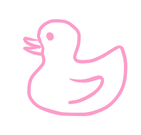

<ul class="nav justify-content-between my-4">
  <span class="elem px-lg-5">
    <li class="nav-item px-lg-4 px-md-3">
      
    </li>
  </span>
  <span class="elem px-lg-5 d-flex">
    <li class="nav-item px-lg-4 px-md-3">
      <a class="nav-link" href="#">about</a>
    </li>

    <li class="nav-item px-lg-4 px-md-3">
      <a class="nav-link" href="#">projects</a>
    </li>

    <li class="nav-item px-lg-4 px-md-3">
      <a class="nav-link" href="#" tabindex="-1" aria-disabled="true"
        >contact</a
      >
    </li>
  </span>
</ul>

<!-- Background -->
<!-- <svg
  version="1.1"
  xmlns="http://www.w3.org/2000/svg"
  xmlns:xlink="http://www.w3.org/1999/xlink"
  viewBox="0 0 230 230"
  xml:space="preserve"
  appParallax
  [ratio]="0.3"
  id="flower1"
>
  <path
    style="fill: #592e83"
    d="M115 6Q180.5 1.550672 139.5 72.564755Q180.5 1.550672 209.396769 60.5Q246 115 164 115Q246 115 209.396769 169.5Q180.5 228.449328 139.5 157.435245Q180.5 228.449328 115 224Q49.5 228.449328 90.5 157.435245Q49.5 228.449328 20.603231 169.5Q-16 115 66 115Q-16 115 20.603231 60.5Q49.5 1.550672 90.5 72.564755Q49.5 1.550672 115 6Q180.5 1.550672 139.5 72.564755z"
  />
  <circle cx="115" cy="115" r="20" stroke-width="3" fill="#230c33" />
</svg> -->



<!-- <svg
  version="1.1"
  xmlns="http://www.w3.org/2000/svg"
  xmlns:xlink="http://www.w3.org/1999/xlink"
  x="0px"
  y="0px"
  viewBox="0 0 230 230"
  xml:space="preserve"
  appParallax
  [ratio]="0.1"
  id="flower2"
>
  <path
    style="fill: #9984d4"
    d="M115 51Q147.328189 70.504065 128.519061 96.392609Q147.328189 70.504065 175.867617 95.222912Q167.308108 131.995935 136.8743 122.107391Q167.308108 131.995935 152.618256 166.777088Q115 170 115 138Q115 170 77.381744 166.777088Q62.691892 131.995935 93.1257 122.107391Q62.691892 131.995935 54.132383 95.222912Q82.671811 70.504065 101.480939 96.392609Q82.671811 70.504065 115 51Q147.328189 70.504065 128.519061 96.392609z"
  />
</svg> -->



<!-- <svg
  version="1.1"
  xmlns="http://www.w3.org/2000/svg"
  xmlns:xlink="http://www.w3.org/1999/xlink"
  x="0px"
  y="0px"
  viewBox="0 0 230 230"
  xml:space="preserve"
  appParallax
  [ratio]="0.2"
  id="flower3"
>
  <path
    style="fill: #fffcf7"
    d="M115 20Q147 59.574374 119 108.071797Q147 59.574374 197.272413 67.5Q179 115 123 115Q179 115 197.272413 162.5Q147 170.425626 119 121.928203Q147 170.425626 115 210Q83 170.425626 111 121.928203Q83 170.425626 32.727587 162.5Q51 115 107 115Q51 115 32.727587 67.5Q83 59.574374 111 108.071797Q83 59.574374 115 20Q147 59.574374 119 108.071797z"
  />
</svg> -->


<app-header></app-header>
<router-outlet></router-outlet>
